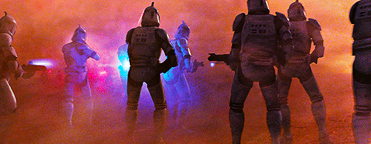

Review
Nathan Bergeron October 21, 2025
Star Wars: Episode II - Attack of the Clones, is a turning point in modern star wars because it introduces large scale battle scenes on the ground. The introduction of the clones is iconic and is the most memorable part of the movie.
My favorite actor from this movie is Hayden Christensen. He does a fantastic job showing Anakins inner conflict and hesitation with the way the jedi order handles things.
Attack of the Clones imdb page
A few fun facts
- Hayden started making lightsaber noises like Ewan during filming
- This was the first movie where Yoda was not a puppet but a full cgi render
- There was not a single physical clone trooper suit made for the film
